Tale of Two Cults
In 2007, I was investigated by the FBI for planning to organise a sex cult involving teenage girls. A computer containing the alleged plan was seized by the FBI. In 2010, nineteen year old Samantha Spiegel interviewed with mainstream media for two months stating that I was the leader of a sex cult. Her account was filled with stories of the sexual abuse of little girls and a death squad that would kill on my command. (UPDATED March 16th 2025)
(JMK) 07/06/24 - The word "cult" is the most offensive term that any religious group or commune could ever be called. The word conjures up an image of a flock of fanatics led by a madman who are all hell bent on a cause that leads to self-destruction, the destruction of those who come against the group, or both. This is the tale of two "cults" - one of which was Jim Jones' and one of which is my own. It is also the tale of two cult investigations. The first investigation was for the creation of a cult, launched against me in 2007. The second investigation was for leading an already created cult, launched against me in 2010. The 2007 FBI investigation was never known to the public. The 2010 investigation was exposed in mainstream media for two months.
It seems I'm from a long line of leaders and organisers of religious groups in foreign lands. My father was a missionary preacher in Jamaica in the late 1950's. He also did some preaching at the church he attended as a child. He did radio sermons in Atlanta. His first wife was the daughter of a preacher. His second wife, my mother, was also the daughter of a preacher. My mother's father was a church pastor on several occasions in the United States. Her father was a missionary evangelist in Guatemala, Central America in the 1970's. My mother was a missionary, with a young preacher, as a teenager in the mid 1950's. They spread the gospel on the U.S. west coast that included the states of California and Oregon. After my parents married in 1958, my mother returned, on several occasions, to my father's previous missionary work in Jamaica. My mother and father were both Pentecostal preachers during their marriage from 1958 to 1969. I do admit that, with such a religiously rooted father, mother, and grandfather, there was an influence in my life to possibly pursue a similar path. Many have thought I've done just that.
In 2007, I was investigated by the FBI for planning to organise a sex cult involving teenage girls. A computer containing the alleged plan, belonging to a person in the state of Louisiana, was seized by the FBI. Supposedly, there were a series of communications between a person alleged to be me and another person, discussing the creation of a sex cult with a central focus on moms and their teenage daughters. The FBI held the computer for several days. It was later returned to its owner with insufficient evidence to charge me with a crime. I was informed about the FBI investigation from start to finish by a source who knew the Louisiana computer owner. I was never approached by the FBI personally. Read Lei Sussurra's article, Karr Contemplates Creation of Cult.
In 2010, nineteen year old Samantha Spiegel, who lived in the Marina District of San Francisco, interviewed with mainstream media for two months, saying that I was the leader of a sex cult called The Immaculates. Her account was filled with stories of the sexual abuse of little girls and a death squad that would kill on my command. Spiegel stated that she feared for her own life. Maybe she thought my death squad was coming for her. The San Francisco Police, along with the San Francisco District Attorney's Office, were part of the investigation. If the FBI was involved in 2010, I wouldn't know about it but would not be surprised if they were. Read more about the events of 2010 in Lei Sussurra's article, The Immaculates.
Spiegel claimed to be one of my past students though she was in a totally different grade from the one I worked with in a San Francisco school for girls. She said I led a cult of JonBenet Ramsey look alike little girls. She said that I asked her to walk the streets of San Francisco at night seeking little girls to abduct for my sexual pleasure or for the cause of my cult. JonBenet Ramsey look alikes, indeed. I am not, nor have I ever been, obsessed with any one little girl from my past. The media gave her center stage to expose me.
Fox News reported that there was a criminal warrant out for my arrest. Believing this "news", I flew from Paris to America to face up to these charges. Fox News retracted their statement after I arrived in America. Quite simply, there never was a warrant for my arrest. The District Attorney's office in San Francisco, headed at that time by once Vice President of the United States, Kamala Harris, made an official statement that they never had plans to issue a warrant for my arrest. Instead, I was served with a restraining order to stay away from Spiegel which was totally ridiculous as I had to fly from Europe to be served with an order to stay away from a person in a continent I had left years prior. I returned to Paris one week and a half after arriving back in America. My regrets for returning to America at all were numerous.
As late as 2017, a reporter asked me if I still led a cult. I responded, "After seven years, you're still asking me that? Unbelievable!" If my answer to the reporter's question had been affirmative, the story according to Spiegel in 2010 would have been a gross misrepresentation of the real thing. Her foolish notion that I would organise a cult with JonBenet Ramsey look alike little girls was a total insult. Her accusation that I sent her out in the middle of the night, seeking out little girls for my murderous sex cult, is totally stupid. San Francisco, of all places, would never be the site of any such nonsense, especially not in the middle of the night like some drug addict seeks out drugs. A cult that kidnaps its children? That's rich and it's a total lie. The real story about my group would have been far more interesting than her nonsensical lies. Read more about Samantha Spiegel in Lei Sussurra's article, Samantha Spiegel's Macabre Collection of Killers.


It was brought to my attention, by those who watched the 2010 coverage, that I was compared to Charles Manson and Jim Jones in the media. I had already been compared to Manson by his prosecutor, Vincent Bugliosi, in 2006. Spiegel brought Manson back into the picture in 2010 because she was corresponding with him at the time. She was also corresponding with Richard Ramirez and Richard Allen Davis. Davis was the killer of twelve year old Polly Klaas of Petaluma California. Spiegel stated, in one of her many television interviews, that she wanted to have Richard Allen Davis's baby. She had shared her wishes with Davis during visits with him in San Quentin Prison. I have a past with Davis, at least through an FBI investigation going back to 2001, and possibly earlier. Read more in my October 2023 article, The Disastrous Abduction of Polly Klaas. Spiegel shared stories in media interviews of her contact with all her killer celebrities. The media ultimately referred to Spiegel as a "killer groupie" - a title that perfectly described her.
On November 18th 1978, in Jonestown Guyana South America, Jim Jones led 909 members of The Peoples Temple in the largest mass suicide in history. Congressman Leo Ryan; photographer Greg Robinson of The San Francisco Examiner; NBC cameraman Bob Brown; NBC reporter Don Harris; and Temple defector Patricia Parks - were shot to death by Jim Jones' loyal death squad on the Port Kaituma airstrip.1 Sharon Amos and her grown daughter Liane Harris along with Sharon's young children, Christa Amos and Martin Amos, all died at the Peoples Temple house in Lamaha Gardens in Georgetown.2 Hanging above Jones' pulpit in the pavilion, where he led the deadly suicides, was a plaque that read, "Those who do not remember the past are condemned to repeat it." A recording of the mass suicide is available at the end of this article.
Prior to the mass suicide, Anthony Katsaris traveled to Jonestown with Congressman Leo Ryan to persuade his sister, Maria Katsaris, to return with him to California. In a photo of Maria and Anthony on the morning of the suicides in Jonestown, likely taken by San Francisco Examiner photographer, Greg Robinson, who was killed by Jones' death squad at the Port Kaituma airstrip, Anthony looks thankful and happy to just be standing next to his sister. His face speaks volumes of his adoration and love for a sister, it seems, he'd love to hold and never let go. Maria, on the other hand, has a far away look on her face of utter obstination. Aside from taking photos of the siblings, NBC News conducted a short interview with Maria and Anthony in Jonestown in November 1978.
On April 17th 1978, in a radio transmission from Jonestown to address concerned relatives in America, Maria Katsaris said that her father raped her from childhood up. She vowed she would never leave Jonestown and return to the US. A recording of her full statement is available at the end of this article.
Maria Katsaris was one of Jim Jones' closest assistants. She held one of the top leadership positions in the organisation. In news articles, she is disrespectfully referred to as one of Jim Jones' mistresses. Some believe Katsaris was the last to die in Jonestown - shooting Jim Jones before killing herself; however, there is no definite evidence of just who killed Jones.
In the middle of the mass suicide, Maria handed off a suitcase filled with cash to Mike Prokes, Tim Carter and his brother Mike Carter. The three men were armed with handguns and were instructed by Katsaris to deliver the cash to the Russian Embassy in Georgetown. In a 1978 interview with the Carter brothers, while still in Guyana, Mike Carter said that authorities reported to the press that there was half a million dollars in the suitcase. In that same interview, Tim Carter said they had no idea how much money was in the suitcase because they weren't informed of the amount and certainly didn't count it. In subsequent interviews, many years later, Tim Carter said the amount of money in the suitcase was a million and a half dollars. In the 1978 interview in Guyana, Tim Carter and Mike Carter said that the men had transferred the cash into a bag and left it in a chicken house. They both reported that they ran for their lives from Jonestown. They said they were picked up by Guyanese authorities hours later and taken to police headquarters where they were placed under protective custody for a time but not under arrest. The fate of the cash was never disclosed.
Some are fortunate enough to have had at least one person in their lives as loyal as Maria Katsaris was to Jim Jones. No time in her life did she ever deceive her respected leader. She was devoted to her leader until the bitter end. She carried out financial missions involving half a million dollars or more on the final day, knowing she would be dead before the day was done. She was likely with Jim Jones when he died. If she shot Jones in the end, she would have yet again been carrying out the final wishes of her leader. But loyalty is not goodness, especially in this case. Maria Katsaris had a darkness within her. Her leader was evil. As one of his closest, Maria Katsaris was evil as well.
Maria Katsaris died on the night of November 18th 1978, in Jim Jones' cabin, by self-administered cyanide poisoning. Maria was dressed in a green checked shirt, tan trousers with a brass belt buckle, white socks, and blue sneakers, and wearing gold colored earrings. She was 25 years old. If only she had returned to California with her brother who traveled to Jonestown to bring her home. On that dark November day in 1978, I wish Anthony would have embraced his lovely sister Maria and never let her go.
As for my views of Jim Jones and the members of his congregation, I do not adhere to the popular consensus that there was a massacre filled with nothing but innocent victims. That is not to say that I am not very sorry that the suicides and the murder of children occurred at all. I have wept over their great loss over the years. However, I do not hold Jim Jones solely responsible for the deaths of 909 of his members any more than I hold Adolph Hitler solely responsible for the totality of the wicked deeds of The Third Reich. Just as Hitler had officers who carried out plans that some of them designed themselves, so also did Jones have his officers who implemented and carried out their missions. Maria Katsaris was one such officer. Her rank was that of Hitler's Himmler. She was not a soldier. Those who emerged from a tractor trailer on the Port Kaituma airstrip to kill the congressman, members of the media, and a defecting member were Jones' soldiers.
 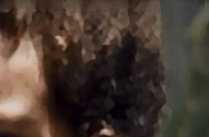
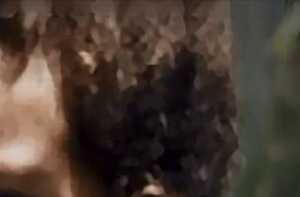


 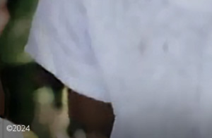
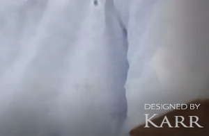
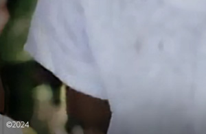
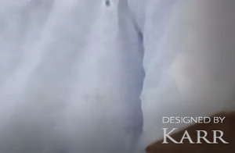
I tend to hold members of The Peoples Temple more responsible, not only on that fateful day in November 1978, but as the group progressed through the years. It has been widely reported for decades that Jones massacred his flock, but what about some, if not many, of the parents who murdered their own children? I agree that some were likely forced to do so, but what of the other parents who willfully killed their children in the name of their strong religious convictions? Sharon Amos was a mother of three who was not in Jonestown during the mass suicide. She was in Georgetown with her three children. Sharon deciphered cryptic radio transmissions from Jonestown that instructed her to kill herself and her children. The secret code said "A lot of people have seen Mr Fraser." "Mr Fraser" was the code phrase for "death" letting Amos know that 909 people in Jonestown were committing mass suicide and she should join them. Sharon Amos took her young children, Christa Amos and Martin Amos, to the bathroom and slit their throats. After that, Sharon and her 21 year old daughter Liane Harris faced one another and each slit the other's throat.3 Jim Jones was not physically present with them nor was a single one of his death squad there forcing them to carry out their murder suicides. I have much more respect for the families who defected on November 18th. They at least made an effort to escape with their children. Though one mom, Patricia Parks, died in that escape effort, her children survived. One hundred ninety children, aged 12 and under, died in Jonestown. I have grieved over their loss ever since.


 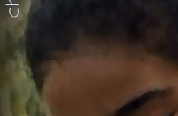
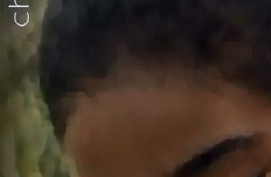


 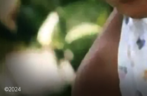
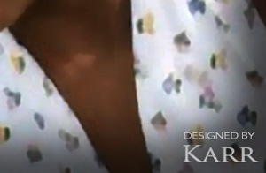
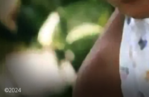
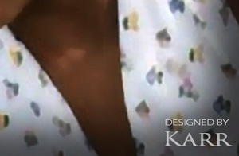
Over 930 people followed Jim Jones to the ends of the earth. This included 909 members who died in Jonestown; 4 members who died at the house in Georgetown; 14 members who defected that day, with one being killed; and members Tim Carter, Mike Carter, and Mike Prokes who were apprehended by authorities that day. There were various defectors over the years. Prior to that fateful day on November 18th 1978, 930 people were convinced they should live in a remote jungle in Guyana South America to be with Jim Jones and fellow members of the Peoples Temple family. They proved they would do anything or sacrifice anything for their leader. His response to their loyalty was abuse, deprivation, near starvation, and their ultimate deaths. How he could bring harm to such precious souls who looked up to him and called him Dad, I will never understand. Having witnessed the atrocities of Jonestown, any leader of a similar family should never wish to make the same mistakes Jones made. What happened in Jonestown should bring any good and decent leader closer to his own family, with a renewed pledge to love them more, to appreciate them more, and to give them everything that is good.
If I am, or have ever been, the leader of a large group of like-minded individuals with a central cause, it would never be modeled after Manson or Jones and it certainly would not be called a cult. We would be a communal family, living a sweet and peaceful autonomous life together. My family would not worship me as their God. They would respect me as their leader. Our focus would not be on little girls, teenage girls, or any one member or small group in our family. Each member of our family would be valued, loved, and respected. My family would not fear me because I would never bring harm to them. My family would not feel disappointment or doubt in me because I would never deprive them of what they so richly deserve. I would earn my family's love, loyalty, and trust by working hard every day to make their lives better. Our family would live a covert life, not because we would have something to hide, but because we would want to protect our privacy, in a beautiful place, where we would live life to its fullest in peace and happiness.
"Nobody joins a cult. Nobody joins something they think's going to hurt them. You join a religious organisation. You join a political movement. And you join with people that you really like."
Deborah Layton Blakey - Past Member
The Life & Death of Peoples Temple
Copyright 2024 All Rights Reserved
April 17th 1978


November 1978
November 18th 1978


November 18th 1978


Peoples Temple Resources